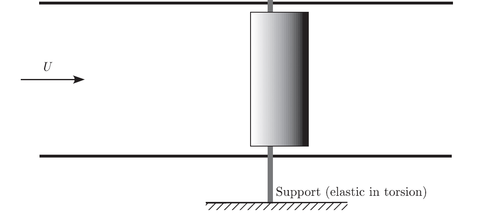
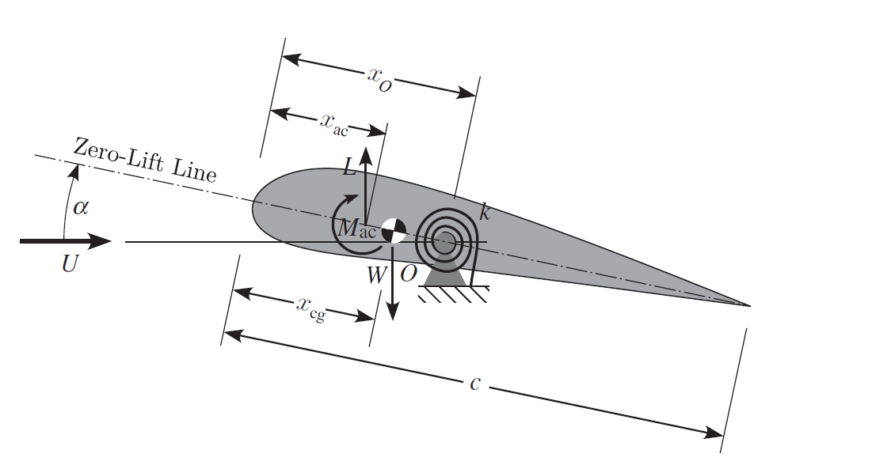
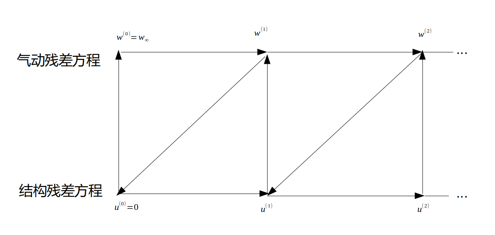

\( \def\
<#1>{\left
<#1\right>} \newcommand{\CC}{\bm{C}} \newcommand{\dydx}[2]{\frac{\mathrm{d}#1}{\mathrm{d}#2}} \newcommand{\pypx}[2]{\frac{\partial
#1}{\partial #2}} \newcommand{\pyypxx}[2]{\frac{\partial^2 #1}{\partial #2^2}} \newcommand{\dyydxx}[2]{\frac{\mathrm{d}^2
#1}{\mathrm{d} #2^2}} \)
有限元方法：
这里以泊松方程为例子，介绍有限元的理论和思想，泊松方程为： \begin{equation} \Delta u = f \end{equation} 在这里$ \Delta $代表的是拉普拉斯算子，而 $ f$和$\varphi $可以是在流形上的实数或复数值的方程。当流形属于欧几里得空间，而拉普拉斯算子通常表示为
${\nabla}^2$，因此泊松方程通常写成 \begin{equation} \left( \frac{\partial^2}{\partial x^2} + \frac{\partial^2}{\partial y^2} +
\frac{\partial^2}{\partial z^2} \right)\varphi(x,y,z) = f(x,y,z) \end{equation} 我们提出如下的带有边界条件的问题 $$ \begin{align*} -\Delta
u &= f \qquad\qquad & \text{in}\quad\Omega, \\ u &= 0 \qquad\qquad & \text{on}\quad \partial\Omega. \end{align*} $$
求解的区域为平面单位正方形，$\Omega=[0,1]^2$。我们假设一个测试函数$\varphi$，并在上式的左边乘上这个函数，对整个区域$\Omega$积分，可以得到 \begin{equation} -\int_\Omega
\varphi \Delta u = \int_\Omega \varphi f \end{equation}
由高斯散度定理（奥斯特罗格拉斯基公式）可以得到： \begin{equation} \int_\Omega \nabla\varphi \cdot \nabla u - \int_{\partial\Omega} \varphi \mathbf{n}\cdot
\nabla u = \int_\Omega \varphi f \end{equation} 需要让$\varphi$也同样满足边界条件（用数学属于描述就是需要让测试函数$\varphi$来自方程解的切空间），因此上式可以写成 \begin{equation}
(\nabla\varphi, \nabla u) = (\varphi, f) \end{equation} 这里使用通用的内积符号$(a,b)=\int_\Omega a\; b$.我们现在的思路就是找到一个解的近似$u_h(\mathbf
x)=\sum_j U_j \varphi_j(\mathbf x)$，而$U_j$是我们需要求的系数，$\varphi_i$是我们用的形函数。因此可以得到 \begin{equation} (\nabla\varphi_i, \nabla
u_h) = (\varphi_i, f), \qquad\qquad i=0\ldots N-1. \end{equation} 现在要求解一个矩阵代数方程 \begin{equation} \mathbf{AU}=\mathbf{F}
\end{equation} 矩阵$\mathbf{A},\mathbf{F}$定义为 $$ \begin{align*} A_{ij} &= (\nabla\varphi_i, \nabla \varphi_j), \\ F_i
&= (\varphi_i, f). \end{align*} $$ 显然，这样就有$\sum_j \mathbf{A}_{ij}\mathbf{U}_j=\mathbf{F}_i$。前面看到我们是左乘$\varphi$，对于对称矩阵（自伴随的），问题是以一样的，不过对于非对称的$\mathbf{A}$，那么经验表明这样会在计算中产生更大的误差。现在整理一下：$\mathbf{A,U,F}$都是稀疏矩阵,积分的计算采用高斯积分算法,这样就是全部思路。
有限元求解弯曲单元的模型
设梁单元的形函数为多项式，并由卡氏第一定理可以推导弯曲单元刚度矩阵 \begin{equation}\label{k_bending_unit} [k_e]=\frac{EI_Z}{L^3}\begin{bmatrix} 12 & 6L &
-12 & 6L \\ 6L & 4L^2 & -6L & 2L^2 \\ -12 & -6L & 12 & -6L \\ 6L & 2L^2 & -6L & 4L^2 \end{bmatrix} \end{equation} 单个具有弯曲和扭转的单元的刚度矩阵为（这里假定梁为圆柱形截面）
\begin{equation} \begin{bmatrix} [k_\text{bending}]_{xy} & [0] \\ [0] & [k_\text{torsion}] \end{bmatrix} \begin{bmatrix}
\nu_1 \\ \theta_{z1} \\ \nu_2 \\ \theta_{z2} \\ \theta_{x1} \\ \theta_{x2} \end{bmatrix} = \begin{bmatrix} f_{y1} \\
M_{z1} \\ f_{y2} \\ M_{z2} \\ M_{x1} \\ M_{x2} \end{bmatrix} \end{equation}
有限元的模型
扭转子刚度矩阵为 \begin{equation} [k_{torsion}]=\frac{JG}{L} \begin{bmatrix} 1 & -1 \\ -1 & 1 \end{bmatrix} \end{equation} 而扭转产生的切应力计算公式为：
\begin{equation} \tau = G\gamma =G\rho \dydx{\varphi}{x} = G\rho\frac{M}{GI_p} \end{equation}


有限元方程求解
有限元方程得到的矩阵通常是稀疏矩阵，通常用专门的稀疏矩阵算法对矩阵进行存储和计算。常见的适合用于解决这方面问题的程序库包括Eigen和deal.II.对于线性方程 \begin{equation}\label{fem_basic} \bm{Ku-f=0}
\end{equation} 当问题的自由度相对较小时，可以采用LU分解或者Cholesky分解的方式。Cholesky分解在这类问题中得到广泛运用：对正定埃尔米特矩阵$\bm{A}$进行Cholesky分解，即求 矩阵$\bm{L}$使得下式成立：
\begin{equation} \bm{A=LL}^* \end{equation} 式中，$\bm{L}$为一个下三角矩阵且所有对角元素均为正实数，$\bm{L}^*$为$\bm{L}$的共轭转置矩阵。当$\bm{A}$是正定矩阵时，Cholesky分解是惟一的。
Cholesky分解的另一种形式——LDLT分解的计算方式如下所示： \begin{equation} {\displaystyle {\begin{aligned} {\mathbf {A=LDL} ^{\mathrm {T} }}&={\begin{pmatrix}
1&0&0\\L_{21}&1&0\\L_{31}&L_{32}&1\\\end{pmatrix}} {\begin{pmatrix}D_{1}&0&0\\0&D_{2}&0\\0&0&D_{3}\\\end{pmatrix}} {\begin{pmatrix}1&L_{21}&L_{31}\\0&1&L_{32}\\0&0&1\\\end{pmatrix}}
\\&={\begin{pmatrix}D_{1}&&(\mathrm {symmetric} )\\L_{21}D_{1}&L_{21}^{2}D_{1}+D_{2}&\\L_{31}D_{1}&L_{31}L_{21}D_{1}+L_{32}D_{2}&L_{31}^{2}D_{1}+L_{32}^{2}D_{2}+D_{3}\end{pmatrix}}
\end{aligned}}} \end{equation}
对于有更大自由度的有限元模型（超过$10^5$)，通常会采用一些别的求解方式。
例如，对于稀疏矩阵的线性方程组求解，一般采用迭代的算法进行求解。对于自伴随矩阵 ，可以采用共轭梯度下降法求解，而对于一般的方阵则采用BiCGStab算法求解。对于大规模稀疏线性方程组，迭代算法能够比矩阵分解算法更高效。
在我的有限元程序里面使用LDLT分解求解有限元方程。
对于航空器的气动力计算，通常有
* 片条理论
* 升力线方法
* 涡格法
* CFD方法
片条理论最为简单，但精确度较低；CFD方法通常最为精确，但求解的成本较大。前面三种方法通常不考虑气体的粘性，或者在计算后对粘性进行修正，因此不适合雷诺数较小的流动状况。在考虑气动弹性的问题时，通常使用片条理论、升力线方法、涡格法而较少使用CFD方法，以寻求在计算效率和精确度之间的平衡。
片条理论
片条理论是一种忽略了下洗的计算方法，能够简单快捷地计算升力分布。在机翼的展弦比大于5的时候，能够给出足够精确的结果。将机翼分成若干个片条，各个片条的升力为 \begin{equation} L_i = C_L^\alpha \alpha_iS_i
\end{equation} 在这里升力线斜率需要用经验公式修正。在处理静气动弹性问题时，由于翼面的扭转变形，攻角沿翼展变化，这时可以用一个修正公式 \begin{equation} \pypx{C_L}{\alpha} = (\pypx{C_L}{\alpha})_\infty
\frac{\lambda}{\lambda + 4} \end{equation} 通常处理气动力计算时，会引入气动力影响矩阵$\bm{A}$，片条理论的气动力影响矩阵为 \begin{equation} \bm{A} = \text{diag}[\frac{1}{C_L^\alpha
c_i}\quad\cdots\quad\frac{1}{C_L^\alpha c_n}] \end{equation} 式中，$C_L^\alpha$应按风洞试验结果或按理论公式计算，$c$为弦长。 那么攻角与升力系数满足以下关系
\begin{equation} \bm{As}=\bm{\alpha} \end{equation}
升力线方法
由于片条理论忽略了下洗，因此会导致气动力计算的不准确，并且无法计算诱导阻力。经典的升力线方法考虑翼型的升力系数随攻角线性变化，并且不考虑气体的粘性。
普朗特升力线理论的基本方程 \begin{equation}\label{eqs:llt} \alpha(y_0)=\frac{\Gamma(y_0)}{\pi V_\infty c(y_0)}+\alpha_0+\frac{1}{4\pi}\int_{-b/2}^{b/2}\frac{(d\Gamma/dy)dy}{y_0-y}
\end{equation} 而诱导阻力的公式为 \begin{equation} D_i^\prime=L_i^\prime \sin\alpha_i\approx L_i^\prime \alpha_i \end{equation}
\begin{equation} D_i=\rho_\infty V_\infty\int_{-b/2}^{b/2}\Gamma(y)\alpha_i(y)dy \end{equation} 通过对上式进行离散化处理，采用数值积分的方式，并进行迭代计算环量$\Gamma(y)$的分布，可以在计算机上对方程（\ref{eqs:llt}）进行数值求解。
涡格法
由于针对CFD求解机翼流场的成本巨大，因此工程上常常采用涡格法求解机翼流场。涡格法在面元上布置点源、点涡或者偶极子，通过控制点法向速度为0的边界条件，可以比较精确得解出下洗、诱导阻力、升力等。在势流理论中，的一个基本解是源（汇）。当这个元素的强度是正的时候，就被称为源，负的称为汇。在$(x_0,y_0,z_0)$的源作用在位于点$P(x,y,z)$
的点的速度势为 \begin{align} \phi(P(x,y,z)) &=-\frac{\sigma}{4\pi|\bm{r}-\bm{r}_0|} \quad & \text{(球坐标)} \notag\\ &= \frac{-\sigma}{4\pi\sqrt{(x-x_0)^2+(y-y_0)^2+(z-z_0)^2}}
\quad &\text{(直角坐标)}\label{eqs2_17} \end{align} 可以将基本解分布在表面上，通常称为板块或者面元。因此分布在某个面上的源作用在点$P(x,y,z)$的速度势能够通过积分式(\ref{eqs2_17})得到
\begin{equation}\label{eqs2_18} \phi(P(x,y,z))=\frac{-1}{4\pi}\int_S\frac{-\sigma(x_0,y_0,z_0)}{(x-x_0)^2+(y-y_0)^2+(z-z_0)^2}dS
\end{equation} 而若在表面布置偶极子或者点涡，则可以得到环量并计算升力。由涡格法可以得到方程： \begin{equation}\label{eqs_vlm} \bm{A\Gamma=v} \end{equation}
其中$\bm{A}$是气动力影响系数矩阵，$\bm{\Gamma}$是各个面元的环量组成的向量，$\bm{v}$是边界条件向量，也就是各个面元的当地攻角。
流固耦合方程的求解
“气动弹性力学”概念最早由航空工程师在20世纪30年代引出，到现在已经发展成为了一门独立的力学学科，其主要考虑气动力与弹性体之间的相互作用，进而研究弹性结构在气流中的力学行为。气流中的弹性结构在空气动力的作用下回发生弹性变形或振动，而结构变形又会让气动力重新分布，这种结构与气动间的相互耦合作用使弹性体产生各类气动弹性现象。为了明确气动弹性力学的分类以及了解气动弹性问题的研究内容，英国学者Collar在1946年绘制了气动弹性力学三角形，生动具体地表示了气动弹性力学所涉及的各个学科以及各学科间的相互联系，如图所示。
流固耦合的残差方程
流体力学残差方程为 \begin{equation}\label{femResidual} \bm{R = Aw - \alpha = 0} \end{equation} 有限元残差方程为 \begin{equation}\label{aeroResidual}
\bm{S = Ku-f=0} \end{equation} 气动弹性力学的求解器通过耦合结构的有限元方程和气动的气动力方程，在收敛求解的过程中，通过分别求解结构残差方程式(\ref{femResidual})和气动残差方程(\ref{aeroResidual})，并互相使用求解出的气动力和位移数据，不断迭代，直到收敛。在这里我们仅仅考虑静气动弹性问题，因此忽略动力学相关的如模态频率，时间步长等因素。
如图所示，当流体力学的求解器第一次被调用时，结构的位移被初始化为0.当流体力学求解器进行了一次求解以后，机翼气动面上的动压被转化为了节点上的力以及力矩，然后调用有限元求解器求解位移，新的位移用来重新求解在机翼上产生的气动力。这个过程一直持续直到气动力（流场的流动状况）和结构的位移收敛，也就是当残差方程(\ref{femResidual})和(\ref{aeroResidual})的范数小于某个很小的常数$\epsilon$时迭代停止，或者相对误差满足方程组\ref{relativeErr}时迭代停止。
\begin{equation}\label{relativeErr} \begin{array}{l} ||\bm{R}(\bm{w}^{(n)},\bm{u}^{(n)})||_2
< \epsilon_r||\bm{R}(\bm{w}^{(0)},\bm{u}^{(0)})||
\\ ||\bm{S}(\bm{w}^{(n)},\bm{u}^{(n)})||_2 < \epsilon_r||\bm{S}(\bm{w}^{(0)},\bm{u}^{(0)})|| \end{array} \end{equation}

在气动弹性耦合方程的状态求解过程中，在这里我们由于使用的都是线性的模型，因此求解的时间成本消耗主要在矩阵的分解上。每迭代一步，无论是气动力影响系数矩阵还是有限元刚度矩阵都会改变，因此求解线性方程组需要对矩阵重新做分解。因此，对于设计变量较多，方程的自由度数目较大时，如果需要大量调用此求解过程，时间成本会非常高。对此，Martins提出了改进的，支持并行化的，分块的求解方法，包括
* 非线性分块高斯-赛德尔迭代
* 非线性分块雅各比迭代
* 牛顿-科里洛夫迭代
* 近似牛顿-科里洛夫迭代
静气动弹性机翼升力重新分布求解实例
设某段矩形机翼翼展为5米，展弦比为9，机翼梁的为圆柱形实心梁，梁的直径为6cm，梁的材料的弹性模量为2GPa，泊松比为0.2，梁位于弦长的30%处。假设空气密度为$\rho = 1.225\text{kg}/\text{m}^2$,风速为18m/s，机翼对气流的攻角为$5^{\circ}$，机翼的升力线斜率为$5/\text{rad}$.
* 将半段机翼的主梁考虑为具有弯曲和扭转特性的悬臂梁列出有限元方程
* 根据片条理论列出气动力方程
* 总共划分为10个网格
* 按照非线性高斯-赛德尔迭代求解机翼在考虑气动弹性作用下的升力分布
* 经过9次迭代
最终得到弹性机翼的升力为$L=128.306\text{N}$,而考虑为刚体的机翼的升力为$L_0=120.264\text{N}$,可见由于刚心位于焦点之后，升力的作用产生的扭转角导致翼型对气流的攻角增大，因此产生的总升力大于刚性机翼产生的总升力，在此处给定的来流下升力增大了6.7%.
运用非线性分块高斯-赛德尔迭代，迭代十步左右即收敛，得到的结果是弹性机翼由于刚心在焦点之后由于扭转变形会导致对气流的攻角增大，因此弹性机翼会产生更大的升力。对于此问题，还应该进一步进行试验验证，以分析计算结果的误差。
### 求梯度的方法
由于基于梯度的优化算法需要利用性能指标关于设计变量的导数，因此如何高效而精确地计算出导数是一个关键问题。通常有
* 有限差分法
* 复数差分法
* 符号微分法
* 自动微分法
* 伴随方法
* 有限差分法：精度低（前向差分或者后向差分为一阶精度，中心差分为二阶精度）；速度慢（需要调用目标函数计算过程）；数值稳定性低；程序简单
* 复数差分法：精度较高（前向差分或者后向差分为一阶精度，中心差分为二阶精度）；速度更慢（需要调用目标函数计算过程）；数值稳定性更高；程序较简单
* 符号微分法：基本不可能用于复杂的表达式
* 自动微分法：精度高；运算速度快；编程复杂
* 伴随方法：精度高；运算速度快；编程复杂
复数差分法
考虑一个解析函数$F(z)$，这意味着该函数无限可微且能够在光滑的延拓的复平面上，那么对于实数$x_0$和$h$，根据泰勒级数有
\begin{equation}
F(x_o+ih)=F(x_0)+ihF(x_0)-\frac{h^2F(x_0)}{2!}\cdots
\end{equation}
取虚部可以得到
\begin{equation}
F(x_0+ih) = \frac{\mathrm{Im}(F(x_0+ih)}{h}+)(h^2)
\end{equation}
因此得到
\begin{equation}
F^\prime(x_0)=\frac{\mathrm{Im}(F(x_0+ih))}{h}
\end{equation}
自动微分法
自动微分是算导数的最优方法，比符号计算、有限微分更快更精确。自动微
分已经广泛应用在优化领域，包括人工神经网络的训练算法 back-propagation。要解连续优化或非线性方程，自动微分是不二的选择。自动微分的原理即为在函数的每
一次运算中，利用链导法则对每一次运算进行微分。自动微分将符号微分法应用于最基本的算子，比如常数，幂函数，指数函数，对数函数，三角函数等，然后代入数
值，保留中间结果，最后再应用于整个函数。因此它应用相当灵活，可以做到完全向用户隐藏微分求解过程，由于它只对基本函数或常数运用符号微分法则，所以它可以
灵活结合编程语言的循环结构，条件结构等。自动微分可以分为正序模式与倒序模式。正序模式中导数沿着代码的执行路径传播，倒序模式则是要求从输出到输入节点，
按照先后依赖关系，对各个节点求取输出对于当前节点的梯度，一旦搜集好对应输出边节点关于当前节点导数，那么当前节点的导数便可以由链导法则计算得出。通常使
用的方式是倒序模式，因为许多微分过程需要倒序模式才能高效求解。
* 正序模式：变量以及微分看成整体相当于是一个数域，根据微分运算规则定义加减乘除规则，函数运算规则由链导法则计算，在C++中可以用运算符重载实现，编程相对容易，运算效率高于有限差分法
* 逆序模式：用对偶的方法求微分，编程实现复杂，但运算速度最快，且能够与伴随方法结合
伴随方法
假设列向量$\bm{x}$是线性方程组$\bm{Ax}=\bm{b}$的解，其中$\bm{A}$是关于设计变量$\bm{p}$的$M\times M$的实数矩阵，$\bm{b}$是关于设计变量$\bm{p}$的实数列向量。为了直接得到$g$的梯度，有
\begin{equation} \frac{dg}{d\bm{p}}=\frac{\partial g}{\partial \bm{p}} + \frac{\partial g}{\partial \bm{x}}\frac{\partial \bm{x}}{\partial \bm{p}}\end{equation}
由于$g$是一个给定的函数，假设$\frac{\partial g}{\partial \bm{p}}$,$\frac{\partial g}{\partial \bm{x}}$不难求得。另一方面，$\frac{\partial \bm{x}}{\partial \bm{p}}$的计算会很困难，因为对于每一个设计变量$p_i$，需要计算$\frac{\partial \bm{x}}{\partial p_i}=\bm{A}^{-1}(\frac{\partial \bm{b}}{\partial p_i}-\frac{\partial \bm{A}}{\partial p_i}\bm{x})$.也就是说，我们需要求解$p$次$M$阶矩阵线性方程，这对于$p,m$特别大的时候是不现实的。
我们可以将问题这样解决：
\begin{equation}
\pypx{g}{\bm{x}}\frac{\partial \bm{x}}{\partial \bm{p}}=\frac{\partial g}{\partial \bm{x}}[\bm{A}^{-1}(\frac{\partial \bm{b}}{\partial \bm{p}}-\frac{\partial \bm{A}}{\partial \bm{p}}\bm{x})]=[\frac{\partial g}{\partial \bm{x}}\bm{A}^{-1}](\frac{\partial \bm{b}}{\partial \bm{p}}-\frac{\partial \bm{A}}{\partial \bm{p}}\bm{x})\end{equation}
并令
\begin{equation}\label{eqs_adj}
\bm{A}^T \bm{\lambda}=\frac{\partial g}{\partial \bm{x}}^T\end{equation}
则可以得到：
\begin{equation}
\frac{dg}{d\bm{p}}=\frac{\partial g}{\partial \bm{p}} - \bm{\lambda}^T(\frac{\partial \bm{b}}{\partial \bm{p}}-\frac{\partial \bm{A}}{\partial \bm{p}}\bm{x})\end{equation}
通过伴随方法，这样可以只求解一次$p$次$M$阶矩阵线性方程式（\ref{eqs_adj}）。
在这里$\pypx{\bm{A}}{\bm{p}}$是三阶张量。
非线性方程的伴随方程与此类似，就是偏导数作为线性方程矩阵的系数。
伴随方法与有限元结合
有限元的基本方程可以写为式(\ref{femResidual})的形式，
由于在这里仅仅考虑静载荷问题，因此有$\pypx{\bm{f}}{\bm{p}}=0,\pypx{\bm{f}}{\bm{u}}=0$，因此有
\begin{equation}
\bm{K}\delta u=-\pypx{\bm{K}}{\bm{p}}\bm{u}\delta\bm{p}
\end{equation}
记$I$为性能指标，约束方程为
\begin{equation}
R(\bm{u,f,p})=\bm{Ku-f}=0
\end{equation}
\begin{equation}
\delta I={\pypx{I}{\bm{u}}}^T\delta\bm{u}+\pypx{I}{\bm{f}}\delta\bm{f}+\pypx{I}{\bm{p}}\delta{\bm{p}}
\end{equation}
\begin{equation}
\delta{R}=\pypx{\bm{R}}{\bm{u}}\delta\bm{u}+\pypx{\bm{R}}{\bm{f}}\delta\bm{f}+\pypx{\bm{R}}{\bm{p}}\delta{\bm{p}}
\end{equation}
这就可以看做是一个带约束的优化问题。带约束的优化问题通常可以使用拉格朗日乘数法则。设伴随向量为$\bm{\psi}$，也可以看作拉格朗日乘子。用拉格朗日乘数法则可以得到
\begin{equation}
\delta I=[\pypx{I^T}{\bm{u}}-\bm{\psi^T}\pypx{\bm{R}}{\bm{u}}]\delta\bm{u}+[\pypx{I^T}{\bm{f}}-\bm{\psi^T}\pypx{\bm{R}}{\bm{f}}]\delta\bm{f}+[\pypx{I^T}{\bm{p}}-\bm{\psi^T}\pypx{\bm{R}}{\bm{p}}]\delta\bm{p}
\end{equation}
伴随方法与有限元结合
选择伴随向量$\bm{\psi}$满足
\begin{equation}
(\pypx{\bm{R}}{\bm{u}})^T\bm{\psi}=\pypx{I}{\bm{u}}
\end{equation}
且记$$\bm{G_f}=\pypx{I^T}{\bm{f}}-\bm{\psi^T}\pypx{\bm{R}}{\bm{f}}$$ $$\bm{G_p}=\pypx{I^T}{\bm{p}}-\bm{\psi^T}\pypx{\bm{R}}{\bm{p}}$$
则有
\begin{equation} \label{eqs_sensitivity}
\delta I=\bm{G_f}\delta\bm{f}+\bm{G_p}\delta\bm{p}
\end{equation}
比如$\bm{R=Ku-f}$，有$\pypx{\bm{R}}{\bm{u}}=\bm{K}$，可得
\begin{equation}\label{adjoint}
\bm{K}^T\bm{\psi}=\pypx{I}{\bm{u}}
\end{equation}
这个就是得到的伴随方程。
$$\bm{K}^T\bm{\psi}=\pypx{I}{\bm{u}}$$
- 伴随方程方程与有限元的基本方程$$\bm{Ku-f=0}$$ 格式上可以保持一致
- 在线性有限元问题中，$\bm{K}^T=\bm{K}$，$\bm{K}$是对称阵
- 而在非线性有限元问题里，$\bm{K}$不一定是对称阵
- 对于线性模型，由于$\bm{K}^T=\bm{K}$，因此我们称系统是自伴随的：右手边的向量$\pypx{I}{\bm{u}}$我们称为伪载荷
- 由于在求解有限元模型的位移时已经对$\bm{K}$做了LU或Cholesky分解，因此在这一步可以大大简化运算量
KS函数
在设计过程中，最为重要的约束条件是结构的强度极限约束。对于每个节点列出约束方程比较费时，因此可以考虑用KS函数将所有的应力约束打包：
考虑对于每个结构有限元，有
\begin{equation}
g_m=1-\frac{\sigma_m}{\sigma_y}\geq0\end{equation}
其中，$\sigma_m$是第$m$个有限元元素的von Mises应力，$\sigma_y$是材料的屈服极限。KS函数(Kresisselmeier-Steinhauser function)
\begin{equation}
KS=-\frac{1}{\rho}\ln[\sum_m e^{-\rho g m}]
\end{equation}
计算实例
设某段矩形截面悬臂梁，长度为1米，截面宽度为1米，厚度为1米，弹性模量为6Pa，受到集度为1N/m的均部载荷。设材料的屈服应力为1.6Pa，KS函数的参数$\rho = 1$.将梁等分为若干个单元，各个单元的截面厚度为设计变量。这里应力梯度和KS函数梯度的具体推导过程略去，且KS函数梯度的表达式有两种，两种并无明显效率上的差别。通过伴随方法和有限差分法分别计算梁的应力和KS函数关于截面厚度的梯度，有限差分法计算的相对步长为%1.二种方法的计算效率对比如图所示。
可以看出，无论是求解应力的梯度还是KS函数的梯度，有限差分法的计算耗时大约是伴随方法的3倍。这个问题存在解析解，通过与解析解的对比，发现伴随方法计算梯度不仅速度更快，而且精度更高。
流固耦合方程的伴随方程
有限元残差方程和气动力残差方程的伴随方程可以写成分块矩阵的形式为
\begin{equation}\label{coupled_adjoint}
{\begin{bmatrix}
\pypx{\bm{R}}{\bm{w}} & \pypx{\bm{R}}{\bm{u}} \\
\pypx{\bm{S}}{\bm{w}} & \pypx{\bm{S}}{\bm{u}}
\end{bmatrix}}^T
\begin{bmatrix}
\bm{\psi} \\ \bm{\phi}\end{bmatrix}
=-\begin{bmatrix}\pypx{I}{\bm{w}} \\ \pypx{I}{\bm{u}}\end{bmatrix}
\end{equation}
计算实例
设某段矩形机翼翼展为5米，展弦比为9，机翼梁的为圆柱形实心梁，梁的直径为0.06cm，梁的材料的弹性模量为2GPa，泊松比为0.2，材料的屈服应力为$\sigma_m=3\times10^6\text{pa}$，梁位于弦长的30%处。假设空气密度为$\rho = 1.225\text{kg}/\text{m}^2$,风速为18m/s，机翼对气流的攻角为$5^{\circ}$，机翼的升力线斜率为$5/\text{rad}$.设计变量为不同截面梁的直径。
最终对比伴随方法和有限差分法计算梯度的效率，不同于纯有限元方程时有限差分法大概是伴随方法3倍的情况，在流固耦合的方程下，由于每一次求解流固耦合方程都需要耗费大量时间，因此运用伴随方法求解梯度带来了显著的效益，而且设计变量越大，效率差异越明显。事实上，当设计变量数目为200时，运行10次伴随方法求梯度的耗时为15.8884秒，而10次有限差分法耗时为813.904秒。如果求解气动力的方法改为更为复杂的涡格法甚至是CFD方法，那么伴随方法将会带来更大的收益。
机翼的优化结果
在这里给出如下一个带约束的优化问题：
\begin{align}\label{opt}
\text{minimize}&\quad&I=\frac{L}{W} \notag\\
\text{w.r.t.}&\quad& \bm{p}\notag\\
\text{s.t.}&\quad& KS>0
\end{align}
和之前所给的条件一致，设某段矩形机翼翼展为5米，展弦比为9，机翼梁的为圆柱形实心梁，梁的直径为0.06cm，梁的材料的弹性模量为2GPa，泊松比为0.2，材料的屈服应力为$\sigma_m=3\times10^6\text{pa}$,梁位于弦长的30%处。假设空气密度为$\rho = 1.225\text{kg}/\text{m}^2$,风速为18m/s，机翼对气流的攻角为$5^{\circ}$，机翼的升力线斜率为$5/\text{rad}$.设计变量为不同截面梁的直径。约束条件为KS函数需要大于0，优化过程需要最小化重量与升力之比。
- 优化算法：SQP算法、移动渐近线算法
- 选取初始条件为$\bm{t}=0.06\bm{e}$
- KS函数的参数$\rho=100$
- 初始的机翼重量为$0.036$，而产生的升力为$128.306\text{N}$
- 优化后的结果为升力$L=131.472\text{N}$，升力提升了2.47%，而重量为$0.02756456959$，重量减少了23.43%
- 优化后的厚度分布为翼根较厚而翼梢较薄
- 优化前性能指标$I=0.000280579$，优化后得到的性能指标$I=0.0002096604815$，优化后的性能指标下降了25.28%
* 在机翼的根部和中部的应力接近屈服应力，而翼梢处应力较小因为这里弯矩很小，应力分布没有超过强度极限，且大致满足满应力准则，并尽可能的减少了质量
* 优化后的机翼在翼尖处有更大的弹性扭转角，因此优化后的机翼产生了更多的升力
值得注意的是参数$\rho$的选取，太大或者太小都不行，太大会使最终的应力过于远离屈服应力，太小则会使计算过程缓慢，因此需要反复选取。在这里是通过试凑的方式使得优化的结果较为满意，既能够最小化指标又能够尽可能接近屈服应力。多次试验表明，在这个优化问题下$\rho$取到几百的数量级能够优化出较好的结果。
另外，由于无论是序列二次规划算法还是移动渐进线算法优化得到的结果均是局部的，因此后续工作中可以先使用一些全局搜索策略，再在局部进行基于梯度的优化。
本文开展了以下研究工作：
* 研究有限元的基本理论和工程梁的有限元模型，编写求解弯曲单元、扭转单元和平板单元的有限元求解器
* 研究片条理论、数值升力线方法和涡格法等工程常用的气动特性计算方法，并编写相应的求解器
* 研究针对气动弹性耦合方程的迭代算法，并编写基于非线性分块高斯赛德尔算法的求解器对实际的机翼在气流下的变形和升力进行计算
* 研究一般的伴随方程，并列出有限元方程的伴随方程，对一段梁的应力和KS函数分别用伴随方法和有限差分法求梯度，对二者的计算效率进行了对比
* 研究流固耦合方程的伴随方程，给出一个实际的机翼模型并提出性能指标，用伴随方法求解梯度并与有限差分法求梯度的耗时进行对比，并对机翼的性能指标通过移动渐进线方法进行优化，得到优化后的机翼
值得改进的地方：
* 在这里仅仅考虑的是静力学的问题，而对于整个飞机而言，涉及结构动力学、飞行力学等方面的优化问题有很大的研究价值
* 对于大展弦比机翼，通常具有很强的非线性，如何针对非线性方程列出伴随方程并求解仍然是个问题
* 对于有限元模型，刚度矩阵实际为稀疏矩阵，而在自己编写的求解器中未将刚度矩阵处理为稀疏矩阵，对于稀疏矩阵，合适的存储方式、求解方式能够减小计算机的运行开销，从而实现求解更大自由度的问题
* 对于许多这里涉及的许多导数项的具体形式，涉及的雅阁比矩阵形式复杂，如果是三阶张量就更为复杂，人工推导表达式容易出错，应考虑采用自动微分方法，让计算机进行链导法则的运算，减小出错的可能性
* 事实上，无论是有限元还是气动计算都有已经成熟的开源代码库，例如有限元的deal.ii，流体力学的openfoam，流固耦合求解器preCICE，以及自动微分运算规则库adept，对于已有的开源程序库，应该多多利用而非自己闭门造车
## 致谢
我北航和哈工大的老师，我的实验室师兄，我的哈工大同学们，所有关心我爱我的人！
## 本科期间的一些研究：
论文：含约束运动学问题的泰勒级数解法
* 梁的求解器，可以用来求解各种类型的梁（包括超静定梁）以及计算截面几何惯性矩
* 安卓APP:easyauto，能够在手机上根据输入的传递函数迅速绘制根轨迹，绘制响应曲线，计算剪切频率截止频率幅值裕度相位裕度等
* 无人机动力系统仿真优选系统，包括电脑端，手机端和网页端，能够对无人机和动力源、螺旋桨、减速组进行运行仿真并优化
* 网页版卫星轨道仿真系统，能够根据输入的轨道六根数或者TLE数据仿真卫星的空间轨迹和星下点轨迹，并具有实时爬取北美防空司令部TLE数据的功能
* 超级sci-hub服务器：在自己的电脑上或者手机上运行的下载论文或书籍的程序，不需要再去寻找sci-hub网址了；更神奇的是，还能够将手机或电脑变成一个小型服务器，局域网内的其它设备可以访问此设备来下载论文
* ......
[一个神奇的网站](/site/index.html)